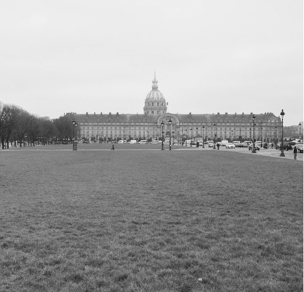

Những buổi chiều hè, lúc mặt trời vàng ngả về phía đường chân trời, tôi hay thích đi dạo ở gần Invalides. Nắng mùa hè ở Paris thật đặc biệt, đến chín giờ tối vẫn còn nắng, nắng chiếu ngang tầm mắt và vẫn còn chói chang. Nếu đứng trên một căn phòng ở tầng cao nhìn nắng, bạn sẽ có cảm giác nó chiếu song song với mặt đất, xuyên ngang qua căn phòng của bạn. Lúc ấy mà chụp ảnh thì tuyệt đẹp. Nắng khiến cảnh vật lung linh hơn và các công trình kiến trúc trở nên to đẹp hơn (bởi cái bóng của các tòa nhà kéo dài tưởng như vô tận).
Nhiều người khi nghe tên Hotel des Invalides thì dịch ngay là khách sạn cho người tàn tật, kể ra có một cái khách sạn như thế cũng hơi đặc biệt, nhưng chữ Hotel trong tiếng Pháp nên được hiểu trước tiên là Trụ sở, và bởi thế, tòa nhà này xuất xứ là trụ sở cho các thương bệnh binh. Nơi đây cũng là Bảo tàng Quân đội và bảo tàng các mô hình, sa hình, nơi lưu trữ phần tro cốt của Hoàng đế Napoléons và phần mộ của nhiều nhân vật trong gia tộc Bonaparte cũng như vài vị hoàng đế, vị tướng trong lịch sử nước Pháp…

Invalides và quảng trường. (Ảnh: Tác giả)
Quảng trường Invalides rộng lớn với những ô cỏ trải xa hút tầm mắt. Vào những ngày đẹp trời, người dân Paris và khách du lịch có thể ngồi ở đó, thưởng thức chút đồ uống và đồ ăn nhẹ mang theo, chơi đàn và hát, cũng có những nhóm chơi bóng, chơi cầu lông… Khung cảnh đông đúc mà thanh bình.
Tòa nhà Invalides luôn rực sáng nhờ phần mái dát vàng lấp lánh, ngày cũng như đêm. Bao quanh tòa nhà là một khu vườn đẹp với những khẩu pháo thần công cổ đại, với bức tường và những hàng cây được cắt tỉa cầu kỳ chạy vòng quanh. Ngồi ở đó nhìn ra những ô cỏ thanh bình đầy ắp người vui chơi, tôi có cảm giác mình đang ngồi giữa cuốn tiểu thuyết kể về chiến tranh và hòa bình, về quá khứ và hiện tại, về con người và thiên nhiên.
Invalides đẹp như vậy, sao tôi lại đặt tiêu đề cho chương viết này là “những khiếm khuyết của một thành phố phát triển”? Một cách trùng hợp, chữ “Invalides” trong tiếng Pháp có nghĩa là khuyết tật, không toàn vẹn. Tôi dùng từ này chỉ để lạm bàn về một vài “khiếm khuyết” của Paris theo quan điểm rất cá nhân. Les Invalides cũng là nơi mà lần đầu tiên tôi “nếm mùi đau khổ” của sự phát triển, chứng kiến những vấn đề mặt trái của thành phố “trong mơ” ấy.
Những ngày gian khó
Thứ Tư, ngày 2 tháng Sáu năm ấy, gần ba tháng sau khi tôi đặt chân đến Paris. Tám giờ sáng, giờ cao điểm, chúng tôi đang trên tàu điện ngầm đến trường. Tàu đang chạy trong một đường hầm tối đen đột nhiên dừng lại. Đi thêm một đoạn. Lại dừng. Vào ga, chính là ga Invalides, người ta thông báo gì đó trên loa. Mọi người nhốn nháo, thở dài kéo nhau ra khỏi tàu. Tôi và người bạn loáng thoáng hiểu: Đình công.
Thế là bắt đầu ngày tận thế. Mọi người chen chúc nhau leo lên những cầu thang để có thể ra khỏi các ga tàu điện ngầm. Trên phố đông nghẹt người và xe cộ. Quảng trường Invalides dường như trở nên chật chội. Bình thường, trên phố không mấy khi đông người đi bộ, nhưng một khi hệ thống tàu điện ngầm có vấn đề, ta mới thấy được bộ mặt “dưới lòng đất” của Paris nhao lên đường. Phải biết rằng hệ thống tàu điện ngầm của Paris chuyên chở 4,1 triệu lượt người mỗi ngày, nếu tính toàn hệ thống giao thông công cộng ở Paris và vùng lân cận thì con số ấy lên đến hơn 10 triệu lượt. Hãy hình dung ngần ấy lượt người ùa lên mặt đường vốn đã khá đông đúc xe cộ thì bạn sẽ hiểu được khung cảnh trở nên hỗn loạn đến nhường nào.
Tôi và cậu bạn mò mẫm bản đồ, tính toán tìm tuyến đường phải đi bằng xe buýt. Tìm ra được đến bến xe buýt thì đã đông nghẹt người. Tuy ở đây người ta không đến nỗi đánh chửi nhau để giành chỗ lên xe buýt, nhưng khi hàng ngàn người đều muốn lên một chiếc xe buýt thì chuyện chen lấn là không tránh khỏi. Sau gần nửa giờ, hai đứa tôi chui lên được một chiếc xe, bẹp như hai con gián, mồ hôi đầm đìa, chưa kịp thở phào thì nghe thông báo: hệ thống buýt cũng đình công luôn.
Sau này chuyện ấy trở nên quen thuộc với tôi hay bất kỳ ai sống ở Paris. Luật pháp nước này cho phép nhân viên của bất cứ công ty nhà nước hay tư nhân nào được quyền đình công để bày tỏ những bất đồng với giới chủ, hay để đòi quyền lợi. Và luật này được công đoàn của các công ty áp dụng triệt để, đặc biệt trong các ngành mà nhân viên của họ biết rằng việc đình công của họ gây ảnh hưởng nặng nề đến nhu cầu thiết yếu và sinh hoạt hằng ngày của người dân như bưu điện, giao thông, vệ sinh môi trường hay trường học, nhà trẻ. Thông thường các cuộc đình công không ở mức độ 100%, tức là chỉ có một phần nhân viên đình công, một số khác vẫn phải làm việc để đảm bảo mức vận hành tối thiểu của công ty. Nhưng khi có những vấn đề mà theo công đoàn của ngành là nghiêm trọng hoặc những tai nạn gây bức xúc, họ đồng loạt đình công.
Ít hôm sau đó tôi biết rằng chiều hôm trước, có một nhân viên thanh tra của RATP, công ty độc quyền về giao thông công cộng ở Paris, trong lúc truy bắt một nhóm thanh niên bán hàng trái phép trước cửa ga đã bị chết vì đau tim. Nguyên nhân được cho là người này đã bị nhóm thanh niên kia đẩy ngã. Và sáng hôm sau, toàn bộ nhân viên của công ty, dưới sự chỉ đạo của công đoàn đã đình công đòi đảm bảo an ninh cho người lao động.
Đó là sự khởi đầu của ba ngày đau khổ. Hầu hết người Paris đã quen cảnh này và có những phương án thay thế cho phương tiện công cộng: họ đi nhờ xe của người thân, đồng nghiệp, họ có xe đạp, xe máy hoặc ô tô, họ xin làm việc ở nhà… Tất nhiên đó chỉ là những giải pháp tình thế, ai cũng đều vất vả, khốn khổ, mất rất nhiều thời gian cho việc đi lại, dù sao thì họ cũng còn lối thoát khả dĩ nào đó. Còn chúng tôi, những sinh viên nước ngoài vừa đến Paris chỉ có phương tiện duy nhất là đôi chân của mình. Nhà cách trường chín cây số, bốn giờ đi bộ mỗi ngày. Thức dậy từ năm giờ sáng để đi học, chín giờ tối mới về đến nhà. Ngày đầu tiên đi chúng tôi vẫn còn phấn khích lắm, vừa đi vừa cười đùa, hát vang phố. Đến ngày thứ ba thì thằng nào thằng nấy cắm đầu mà đi, vừa đói vừa mệt, chẳng ai nói với ai câu nào, về đến nhà là ngã lăn ra giường, ai vào giường chậm thì hết chỗ, đành nằm vật xuống đất. Chân sưng phồng lên. Giày da Việt Nam sang đây gặp thời tiết khô thì cứng như đá, ngày nào cũng đi bộ hai chục cây số trên đôi giày ấy còn hơn cả đi hành quân.
Tôi không hiểu tại sao ở một xã hội phát triển đến thế, cái chết của một người, dù với lý do gì đi nữa, lại có thể gây ra sự khổ cực, phiền toái cho hàng triệu người như vậy. Đồng ý rằng dân chủ là tốt, rằng việc người lao động đứng ra bảo vệ cho quyền lợi của mình là biểu hiện của sự tiến bộ, nhưng có phải họ đang lợi dụng tính độc quyền trong ngành của mình để đòi hỏi, để làm mình làm mẩy. Trong những ngành nghề khác cũng có khi xảy ra tai nạn đáng tiếc, nhưng không có ngành nào đình công nhiều như lĩnh vực giao thông công cộng ở Pháp, họ đình công vì bất cứ nguyên nhân gì: đòi tăng lương, giảm giờ làm, đòi cải thiện các điều kiện phúc lợi mặc dù nhân viên trong ngành này đã có vô số những quyền lợi, những đặc quyền hơn hẳn các ngành khác. Tôi còn nghĩ rằng trong mấy ngày ấy, có thể số vụ tai nạn giao thông đã tăng lên hàng chục lần so với bình thường, đã có nhiều ca đột quỵ hay đau tim vì việc đi lại quá vất vả, các công ty thua thiệt hàng trăm triệu euro vì không có nhân viên, vì đường xá ách tắc, vì các chuyến công tác bị hủy…
Ba ngày sau, cuộc đình công bị dừng lại cũng đột ngột như khi nó diễn ra: lý do là đã có rất nhiều người làm chứng rằng, cái chết của nhân viên thanh tra kia hoàn toàn là do một cơn đau tim tự nhiên (người này đã có bệnh tim từ trước), không có ai xô đẩy hay đụng chạm gì đến ông ấy. Và công đoàn ngành giao thông không có lý do gì để tiếp tục cuộc đình công. Tất cả chỉ có thế, chừng ấy khổ sở, vất vả, hỗn loạn cho một câu chuyện được thêu dệt và thổi phồng. Với riêng tôi, đó cũng là mặt trái, là khiếm khuyết của sự phát triển.
Nhưng cũng chính trong những ngày ấy, tôi thấy được phẩm chất của những người Pháp. Trong cảnh hỗn loạn, đông đúc, người Pháp vẫn nhẫn nại chịu đựng. Không phải cam chịu mà là cảm thông và biết chia sẻ. Nếu bạn hỏi ý kiến bất kỳ ai trong những ngày giao thông công cộng tê liệt như thế, phần lớn sẽ trả lời rằng họ có thể cảm thông được với những người đình công và “phải có lý do họ mới làm thế”. Tất nhiên, trong những câu trả lời ấy có không ít người không thật lòng nghĩ như vậy (người Paris vẫn được biết đến như là những “hypocrite [1]”), nhưng cũng để thấy một phẩm chất khác: họ không than vãn, kể khổ, cũng không mượn tình hình để kêu gào về những khó khăn của bản thân.
Cũng chính từ đó, tôi lại rút ra một phương châm khác cho cuộc sống của riêng mình: sống tích cực. Trong bất kỳ câu chuyện, hoàn cảnh nào cũng đều có những mặt khiếm khuyết hay tiêu cực, lại có những điểm tích cực có thể rút ra. Nếu ta cứ chăm chăm phê phán và soi mói chuyện của người khác, hay than vãn kêu ca về chuyện của bản thân, ta sẽ thấy đời sao mà bạc, người sao mà tệ. Còn cũng giống như câu chuyện “Tái ông thất mã”, nếu ta lấy mỗi câu chuyện, mỗi kinh nghiệm dù là tệ bạc để phân tích và nhìn vào những điều tích cực cũng như rút ra một bài học cho mình, ta sẽ thấy cuộc sống đẹp hơn và con người cũng đẹp hơn.
Paris, như tôi đã nói, còn nhiều “khiếm khuyết” khác, và điều khiến du khách hay phàn nàn là người Paris không niềm nở, thậm chí lạnh lùng. Đường phố Paris không phải nơi nào cũng văn minh sạch đẹp, không phải nơi nào cũng an toàn tuyệt đối. Từ 20 năm trở lại đây đường phố Paris bẩn hơn, nhộn nhạo hơn. Không phải vì người Pháp, người Paris không còn sạch sẽ, không còn tiếp tục những cử chỉ đẹp của mình, mà vì càng ngày họ càng trở nên thiểu số so với những người ở nơi khác đến, những người nhập cư và khách du lịch. Khi đến Paris, nếu bạn muốn chê trách thái độ của một “người Paris”, liệu bạn có chắc rằng người đó không phải cũng giống như bạn, từ nơi khác đến, và hẳn rằng người đó có thể cũng đang nhìn vào bạn để đánh giá về “người Paris”. Ở những điểm du lịch mà du khách thường phàn nàn về vệ sinh, họ có nghĩ rằng hầu hết rác thải là từ những du khách như họ. Ở Paris, ở Hà Nội hay bất kỳ nơi nào khác trên thế giới, nếu bạn sống ở đó hay chỉ đơn giản là có mặt ở đó vào một thời điểm, hãy đừng vội phán xét, hãy nghĩ trước tiên về thái độ và tính văn minh của bản thân, về những gì bạn có thể đóng góp được cho nơi đó.
Có những công trình khoa học đã chỉ ra rằng, ở giữa cộng đồng, có những hành vi mang tính lan truyền. Ngáp là một ví dụ: trong một căn phòng, khi một người bắt đầu ngáp thì ít lâu sau sẽ có người khác, rồi thêm người khác nữa. Ho cũng vậy, khi nghe ai đó ho, ta cũng thấy mình ngứa cổ. Các chứng minh khoa học hình như mới chỉ dừng ở đấy. Nhưng tôi tin rằng, trong cộng đồng người ở bất kỳ đâu, rất nhiều, rất nhiều hay có thể nói là mọi hành vi, cử chỉ đều có tính lan truyền. Cười là một ví dụ, vui vẻ là một ví dụ, vứt rác cũng có tính lây lan, chửi thề, chê bai cũng thế. Cái xấu cái tốt đều có thể lan truyền, mà chẳng hiểu sao, cái xấu dễ lan hơn, có lẽ vì bao giờ làm việc xấu cũng dễ dàng hơn. Tốt ở trong gia đình đã là tốt, tốt ngoài xã hội còn tốt hơn. Việc gì tốt ta làm được, đừng nghĩ nó chỉ dừng lại ở ta, hãy tiếp tục làm, làm nhiều hơn, nó sẽ lan ra, nhân lên. Những khiếm khuyết và phẩm chất của một thành phố, một đất nước nơi bạn sinh ra hay đang ở phụ thuộc cuối cùng vào chính mỗi chúng ta.